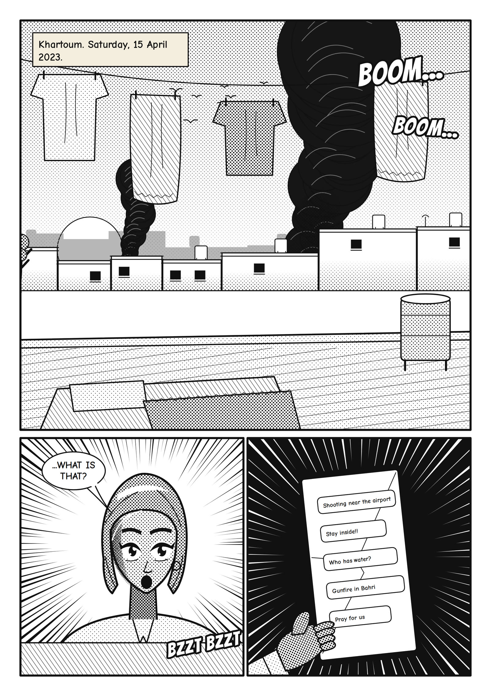

A Global South Solidarities manga · Khartoum, 2023–2025
Original · One pot. One street. One country refusing to starve.

For the volunteers of Sudan's Emergency Response Rooms — the neighbourhood committees who kept communal kitchens (takaya, singular takiyya) open while the war closed everything else.
The characters are fictional; the events they live through are documented. The Emergency Response Rooms (ERRs) are decentralised, youth-led mutual-aid networks that have organised meals, medicine and evacuations across Sudan since the war between the SAF and RSF began on 15 April 2023. By mid-2024 the ERRs were running thousands of communal kitchens serving hundreds of thousands of people a day. Across 2024–2025 famine was formally declared, cholera returned, and foreign funding to the kitchens collapsed; many takaya have been forced to close.
Sources: Emergency Response Rooms (overview) · The New Humanitarian — one volunteer, one year · Al Jazeera · Soup kitchens close (Mar 2025) · Al Jazeera · Darfur cholera & famine (Aug 2025) · Human Rights Watch · Sudan 2026.
Use ← → or swipe to turn pages. Tap the left/right third of a page to turn.